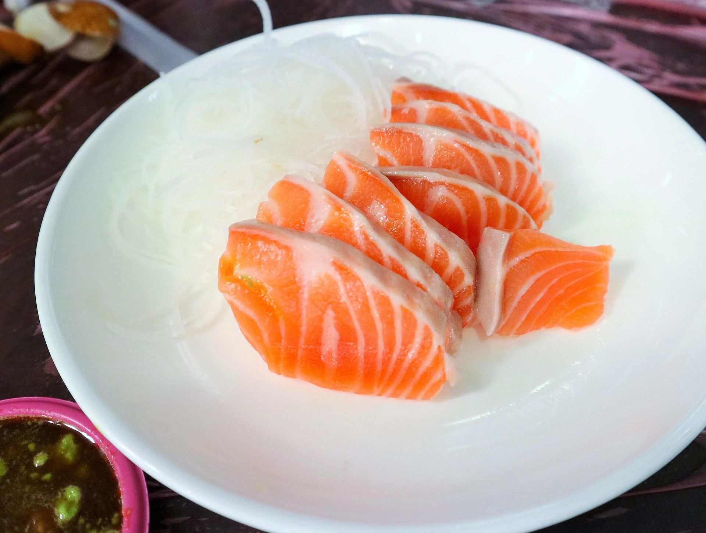

Salmon Sashimi

Description
Sashimi are small strips of cut raw fish. It may seem like a simple dish, but there are a couple secrets to make it just right.
Eating raw fish?
Fish cannot be eaten raw without proper treatment, even then, not every fish variety is safe to eat raw. Actually, the pink salmon that is produced locally in Japan is not safe to eat raw, as it contains parasites that don´t die even after freezing, so Japan imports a huge amount of salmon from Norway wich is safe to eat raw. But coming back to the recipe, to safely eat fish raw we must freeze it, for at least a week. This ensures us that all the germs are gone before we defreeze and eat our sashimi. There's a couple of key points on making sure that our fish defreezes in the best state possible:
- Cut the fish in small portions, this will allow us to take out the freezer only what we'll eat, wich is good since we cannot refreeze food after it has been defrozen
- Wrap your fish thigthly in plastic wrap, use it to give it a bit of shape and make sure that there is as little air as possible. The method I use is vaccum sealing, since it's the most reliable
- Freeze it as fast as you can. This entitles putting it on the coldest part of your freezer
After freezing, the best way to defreeze it would be to leave it on the fridge for as long as it needs. But if you are a bit impatient as I am, what also works is submerging the bags in romm temperature water until they are soft (be careful if you don´t use vaccum sealed bags with this method, as water getting into the wraping onto the fish is technically not safe to eat).
Curing the fish
Fish made for sushi is usually cured for a couple minutes before eating. In our case we'll do the curing before freezing. Just take a bit of salt and sprinkle it evenly troughout the fish on both sides and let it rest in the fridge sitting at an angle (so that the moisture has somewere to got) for not more than 20 minutes. Curing gets rid of the fish smell and gives the salmon a nicer look and texture. There are different curing "recipes", you can include sugar in the mix if it ends up to salty, you can submerge the fish in rice vinager, every chef has their own recipes. Once you take the fish out of the fridge, wash it under low pressure cold running water to take the salt off and after that pat it dry with a kitchen cloth or paper towel. Then proceed with the wrapping and freezing.
Ingredients
- Salmon fillets (make sure it is safe to eat raw)
- Salt
- Take your salmon fillets and cut the exces fat and take the skin off, you'll want your pieces to be about a hand wide
- Put the cut pieces on a tray and sprinkle with a little salt evenly on both sides
- Take the tray and place it in the fridge sitting at an angle for about 20 minutes or less
- After taking the fish out of the fridge, wash it with low pressure cold running water to take the salt off and pat it dry with a kitchen cloth
- Wrap the dried pieces on a couple layers of plastic wrap or put them in vaccum sealed bags, try to shape it so that it dosen´t deform.
- Place them in the coolest part of the freezer and keep them there for a week.
- To defreeze, keep the bags on the fridge for about a day or submerge them in room temperature water